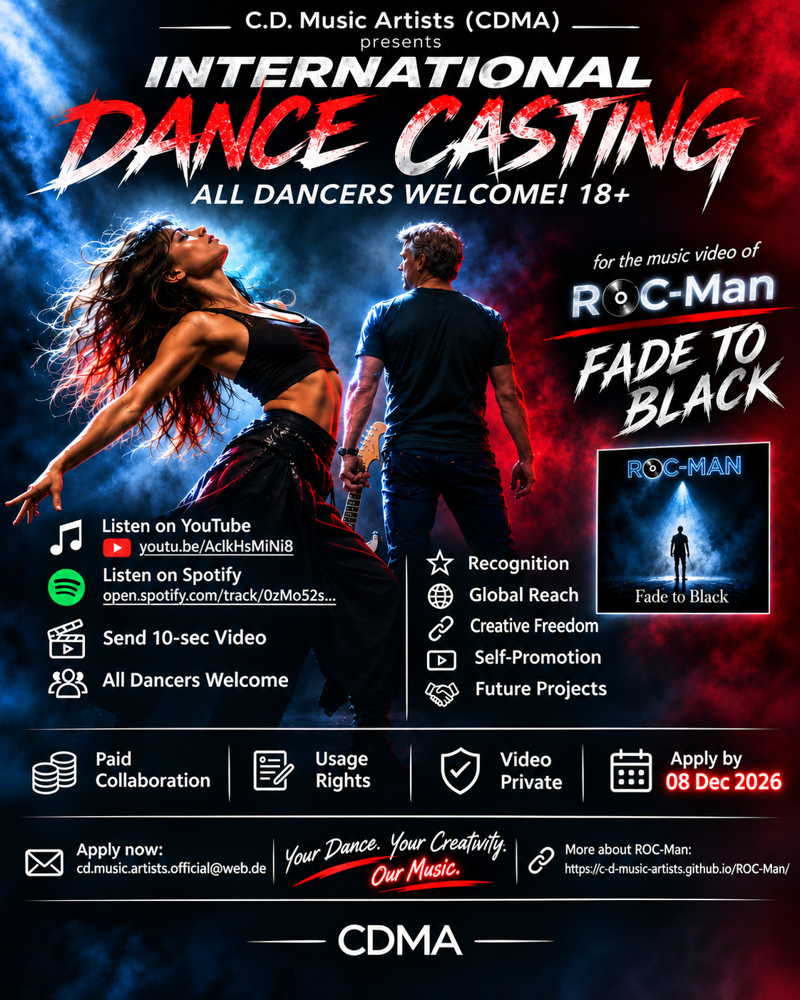

International Dance Casting
ALL DANCERS WELCOME! 18+
Your Dance. Your Creativity. Our Music.
Apply by 8 December 2026

Everyone is welcome!
We are looking for creative dancers aged 18 or over from around the world for ROC-Man's original rock song “Fade to Black.”
All genders, backgrounds and experience levels are welcome – from complete beginners to professional dancers. What matters most is your creativity, passion, musicality and ability to express emotions through movement.
The creative challenge
For selected dancers
Selected participants will be invited to develop and independently record an original choreography covering the entire song. You can participate from anywhere in the world!
A creative partnership – growing together
We believe in supporting emerging artists and creating opportunities for mutual growth.
- Artist Recognition: Your name or stage name can be featured in the official music video credits, if desired.
- Creative Freedom: Develop your own choreography and express your individual artistic vision.
- International Exposure: Your performance may reach audiences worldwide through ROC-Man's official channels.
- Portfolio & Self-Promotion: You may use approved excerpts of your final performance for your own portfolio, showreel and social media promotion after the official release, under the terms of our agreement.
- Future Opportunities: A successful collaboration may lead to further music video projects with C.D. Music Artists.
Paid creative collaboration
This is a paid project with a one-time fixed fee. Compensation and production details will be discussed individually with shortlisted dancers after reviewing their audition videos.
A written agreement covering worldwide commercial usage rights for the final recorded performance and choreography will be required before production begins.
Your 10-second audition video will be used exclusively for the selection process and will not be published or commercially exploited without your separate permission.
How to apply
Application deadline: 8 December 2026
Send your 10-second dance sample and a short introduction to:
cd.music.artists.official@web.de
Discover more about ROC-Man.
No professional experience required – just creativity, passion and your own unique style!
Every artist deserves a chance to shine. Let's create something special together!